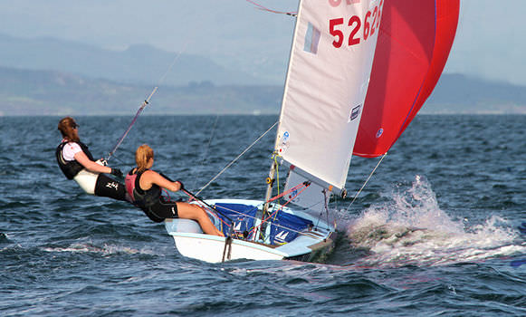
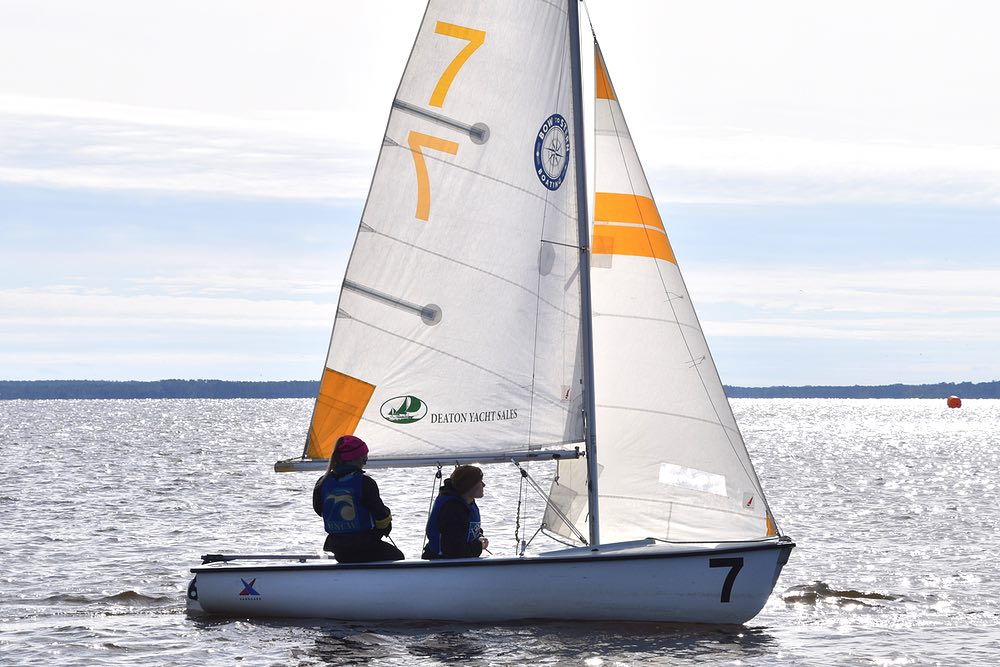
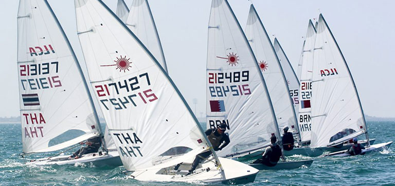
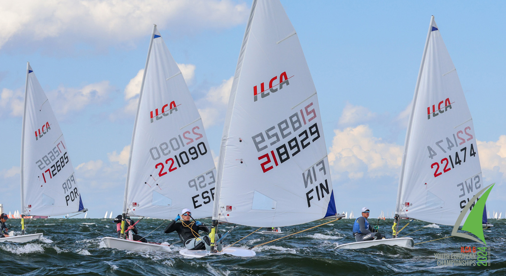
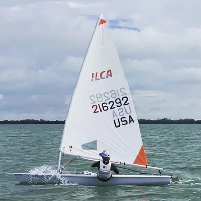

C420
C420
CFJ
CFJ
ILCA 7
ILCA 7, also known ass a 'full-rig' laser. The full-rig is 7 square meeters and is the biggest sail size made for lasers. The ILCA 7 was the first sail size made for lasers, but now there is a suggested weight to be sailing it. The recommended minimum weight to be sailing a full-rig comfortably is about 160 lbs (about 72 kg). Of course you do not have to be the recommended weight to be sailing a full rig, but it might be harder to keep it flat when sailing in higher winds. In more serious regattas, you might get your weight checked to make sure you are in the correct weight class for your sail size. All laser hulls are about 13ft 10in, the only thing differentiating the ILCA classes are sail size.
ILCA 6
ILCA 6, also known as the radial laser. The radial sail is the 'medium' size sail for the laser, the 6 in the name 'ILCA 6' stands for the sail size being 6 square meeters. Radial lasers have a recommended weight for sailing comfortably is around 130-160 lbs. ILCA 6 is the most popular fleet in the laser class, as many youth and women are within the weight range and can sail radial sails comfortably without having to worry about being too light to keep the boat flat in heavier winds or being too heavy in lighter winds. All laser hulls are about 13ft 10in, the only thing differentiating the ILCA classes are sail size.
ILCA 4
ILCA 4, also known as a 4.7 laser, is the smallest sail size that lasers come in. The 4 in the name ILCA 4 stands for the sail size being 4.7 square meeters. ILCA 4 has a recommended weight range of about 100-130 lbs. The 4.7 sail size is a good size for youth to start in as they are commonly past Opti sailors who have grown too big to be able to compete in the Opti classes. All laser hulls are about 13ft 10in, the only thing differentiating the ILCA classes are sail size.
